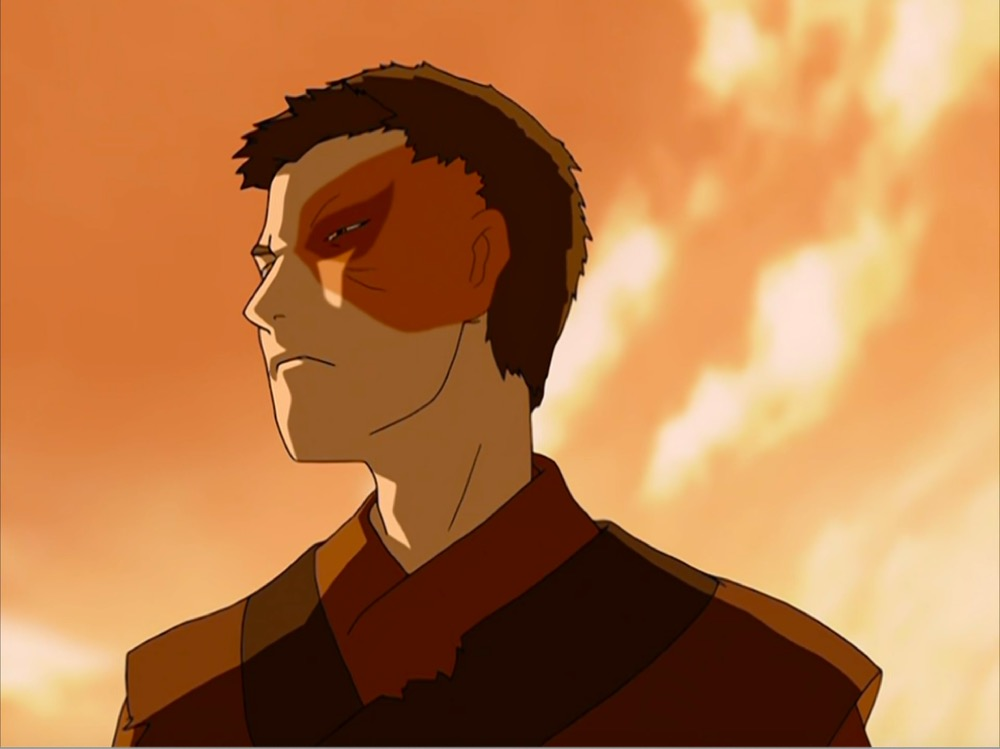

FLUENT MIND ADVENTURES · B1
🔥 ZUKO ALONE
THE FIRE NATION FAMILY FILES · Past tenses, choices and consequences
6 missions · approximately 35–40 minutes · based on the animated series (2005), Book 2 Episode 7

For open answers, discuss your reasoning with your teacher. · Image credits